预印本。审稿中。
面向数据受限训练的指导性 scaling laws
Justin Lovelace*、Christian Belardi、Srivatsa Kundurthy、Shriya Sudhakar、Kilian Q. Weinberger
Cornell University 计算机科学系，美国纽约州 Ithaca
摘要
训练计算量的增长正日益超过高质量数据的供给。这使核心挑战从最优分配计算量，转向从有限数据中提取最大价值。被广泛采用的 Chinchilla scaling law 假设每个训练 token 都是唯一的，这限制了它在数据受限情形下指导预训练决策的能力。我们用一个简单的加性过拟合惩罚项来建模重复数据下的额外 loss，发现它能准确描述模型行为。我们的 scaling law 给出了在定性上全新的计算最优分配建议：超过某个点后，进一步重复数据反而有害，计算量更应投入模型容量。我们表明，采用该规律建议的配置能改善数据受限情形下的性能。最后，由于我们的单参数形式用一个系数单独刻画过拟合，它支持对不同训练配置进行直接比较。作为案例研究，我们表明，较强的权重衰减（\(\lambda=1.0\)）使该系数降低约 70%，为近期发现——数据受限情形下的最优权重衰减比标准做法高一个数量级——提供了 scaling law 解释。
1. 引言
训练计算量的扩展速度快于高质量数据供给。尽管原始文本十分丰富，当前最先进训练流程的趋势——激进的质量过滤（Penedo et al., 2024）、对精选子集上采样（Olmo et al., 2025），以及在领域语料上进行中期训练（Allal et al., 2025；Olmo et al., 2025）——反映了一个新现实：瓶颈在于数据，而非计算量。在数学、代码和低资源语言等专门领域，限制更为明显。领域数据集通常比计算预算能够消化的数据规模小若干个数量级（Lewkowycz et al., 2022）。这使核心问题从 Chinchilla 框架下如何在无限数据情形中最优分配计算量（Hoffmann et al., 2022），转变为如何从固定数据池中获得最大收益，同时将计算量视为实际上不受限制。
最简单的应对方式，即跨多个 epoch 重复使用数据，已经十分普遍。然而，Chinchilla scaling law 假设每个 token 都是唯一的，已有针对数据重复的扩展（Muennighoff et al., 2023）则有一个关键局限：它们能建模收益递减，却无法表示 loss 因过拟合而上升的区域。它们也未能捕捉过拟合与模型规模之间的交互。在实践中，较大模型在重复数据上过拟合得更快。不显式建模过拟合，就无法准确描述重复数据下的语言建模行为。
我们提出一个简单的加性过拟合惩罚项，编码这样一个直觉：数据越有限、模型越大，过拟合就越严重。因此，我们认为重复 token 一方面仍有用，另一方面同时产生一个随重复次数增加、单独相加的过拟合惩罚。
*通讯作者：jl3353@cornell.edu
预印本。审稿中。
我们训练了 300 多个模型，涵盖 15M–1B 参数、50M–6B 唯一 token、两种权重衰减强度，最多训练 16 个 epoch。我们的核心贡献是面向数据受限 scaling laws 的加性过拟合惩罚：用一个简单的重复项扩展 Chinchilla law。由 1、2 和 4 个参数形式组成的复杂度阶梯，勾勒出拟合质量与复杂度之间的 Pareto 前沿，即使单参数形式也明显优于以往的数据受限 scaling laws。拟合得到的规律产生了在定性上全新的计算最优分配建议：超过一个依赖数据的阈值后，进一步重复数据反而有害，计算量更应投入模型容量。我们通过训练各个规律建议的配置，验证这一指导性结论，表明我们的建议在困惑度与下游评测方面均取得最好表现。最后，由于该规律用一个系数单独刻画过拟合，它能够直接比较不同训练配置。作为案例研究，我们表明，较强权重衰减（\(\lambda=1.0\)）将过拟合降低约 70%；我们的规律还预测出强正则化超过标准设置时对应的计算预算，说明它能有效指导数据受限情形下的训练决策。
2. 背景与相关工作
神经 scaling laws。训练大型语言模型需要作出两项关键决策：模型要多大，以及使用多少数据训练。这两者共同决定所需计算量和最终模型性能。通常，以模型在留出文本上的 loss 衡量性能。一个自然的问题是，扩大模型或数据集时，loss 如何变化？经验上的答案十分简洁：无论增加哪一个量，loss 都会可预测地下降，遵循一个跨越多个数量级仍成立的平滑数学趋势。这些趋势被称为神经 scaling laws，而可预测性正是其有用之处。研究者可以对大量规模小、成本低的训练运行拟合 scaling law，而无需通过训练许多大型模型来寻找最佳配置，后者成本高得难以承受。随后，在实际投入计算量之前，就能用 scaling law 预测大得多的训练运行会获得何种 loss。
Kaplan et al.（2020）首次确立了这些趋势，Hoffmann et al.（2022）进一步将其完善为 Chinchilla scaling law，将训练后模型的最终 loss 表示为三项之和：
其中 \(N\) 为模型参数数量，\(D\) 为训练 token 数量。三项均有自然解释。第一项 \(E\) 是无论计算量扩大多少，loss 都无法低于的下限。自然语言具有内在的不可预测性（下一个词很少完全由前文决定），\(E\) 刻画这种不确定性。第二项 \(A/N^\alpha\) 表示模型过小的代价。参数有限的模型无法表示语言中的所有模式。随着 \(N\) 增大，该项趋近于零，下降速度由指数 \(\alpha\) 控制。第三项 \(B/D^\beta\) 表示训练数据过少的代价。即使模型很大，若看到的数据不足，性能也只能平平。随着 \(D\) 增大，这一项也趋近于零，速度由指数 \(\beta\) 控制。三项合起来表明，loss 由本质上无法学习的部分、模型过小而学不到的部分，以及数据过少而教不会的部分组成。
这一形式的一个实际推论是：计算预算决定模型规模与数据集规模如何权衡。训练计算量遵循 \(C\approx6ND\)（见 Kaplan et al., 2020），因此固定 \(C\) 时，scaling law 会选出一组使预测 loss 最小的特定 \((N,D)\)。确切的 \(N:D\) 比例依赖于拟合指数，并随数据集和训练设置不同而在各项 scaling 研究间变化（Li et al., 2025）。
关键在于，Chinchilla law 假设每个训练 token 都是唯一的，即模型对每段文本恰好只看一次。实践中，高质量文本往往稀缺到需要在同一数据上训练多遍，从而违反这一假设。这种形式的 scaling laws 已被广泛用于指导不同领域和应用中的训练决策（Ludziejewski et al., 2024；Gulrajani & Hashimoto, 2023；Cherti et al., 2023；Kumar et al., 2025；Aghajanyan et al., 2023；Sardana et al., 2024；Gadre et al., 2025）。（本句接原文第 3 页。）
预印本。审稿中。本页开头的跨页引文已接续于上一页译出。
数据重复下的扩展。Chinchilla law 假设每个训练 token 恰好只出现一次，但实际模型经常在相同数据上训练多个 epoch。虽然性能继续改善，每多遍历一次数据，带来的收益会逐渐减少。到某个点之后，增加 epoch 几乎没有贡献，甚至可能因过拟合而损害性能。任何考虑重复的 scaling law，都必须刻画这种收益递减。
Muennighoff et al.（2023）通过用有效数据量 \(\widehat D\) 替代 Chinchilla law 中的原始 token 数 \(D\)，形式化了这一直觉。核心思想是，重复 token 的贡献按指数衰减。第一次重复的价值几乎与新数据相同，第二次略小，依此类推，直到进一步重复几乎不再增加任何价值。设 \(U_D\) 为数据集中唯一 token 的数量，\(R_D\) 为首个 epoch 以外的额外 epoch 数（\(R_D=0\) 表示模型每个 token 看一次，\(R_D=1\) 表示看两次，依此类推）。他们定义：
其中 \(R_D^*\) 是拟合常数，控制重复数据失去边际价值的速度。该表达式的行为直接符合衰减直觉。当 \(R_D\) 较小时，指数项近似线性，因此 \(\widehat D(U_D,R_D)\approx U_D(1+R_D)\)，每个重复 epoch 的贡献都几乎与一遍新数据相同。当 \(R_D\) 增大，指数部分趋于饱和到一，\(\widehat D(U_D,R_D)\) 趋近上限 \(U_D(1+R_D^*)\)。无论再增加多少 epoch，有效数据都无法超过该上限。将 \(\widehat D\) 代入 Chinchilla 形式得到：
然而，这一形式将重复视为纯粹的数据侧现象，与模型规模无关。经验上，这并不完整：大模型在重复数据上比小模型过拟合得更快，因此重复的代价除了 \(D\)，还应依赖 \(N\)。为刻画这一点，Muennighoff et al.（2023）也对模型参数应用同样的饱和形式。直觉是，模型可能相对于数据集过大。如果参数量远超可用唯一 token 所能支持的规模，额外容量就会产生收益递减。他们相对于 \(N_{\mathrm{opt}}\)，即 \(U_D\) 个唯一 token 所对应的 Chinchilla 计算最优模型规模，衡量过剩容量。若实际模型规模 \(N\) 超过 \(N_{\mathrm{opt}}\)，比值 \(R_N=N/U_N-1\) 衡量过度参数化的程度；否则 \(R_N=0\)。记 \(U_N=\min\{N_{\mathrm{opt}},N\}\)，有效参数量为：
其中 \(R_N^*\) 的作用与 \(R_D^*\) 相同，只是针对过剩参数而非重复 token。将 \(\widehat D\) 和 \(\widehat N\) 同时代入 Chinchilla 形式，得到多出两个拟合常数（\(R_D^*\)、\(R_N^*\)）的 scaling law：
这引入了模型规模与重复之间的交互：过度参数化模型的有效容量 \(\widehat N(U_N,R_N)\) 趋于饱和，从而提高大量重复情况下的预测 loss。
虽然这一形式正确刻画了定性行为，其机制却是间接的。它将过度参数化建模为有效模型规模上的收益递减，而不是显式的过拟合代价；而且，为什么过剩参数应与重复数据遵循相同的指数饱和形式，也并不清楚。在第 4 节，我们提出一种替代形式，显式分离重复 token 的贡献和它们带来的过拟合惩罚，并表明这一分解揭示了正则化强度如何调节模型对重复的耐受性。
预印本。审稿中。
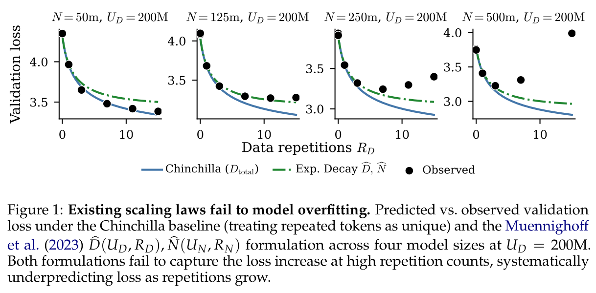
3. 实验设置
我们采用 Llama 2 架构与 tokenizer（Touvron et al., 2023），在由模型规模、唯一数据预算和重复次数组成的网格上预训练仅解码器语言模型。所有模型均在大规模过滤后的网络语料 FineWeb（Penedo et al., 2024）上训练。在 scaling 研究中，我们扫描从 15M 到 1B 参数的模型规模 \(N\)、从 50M 到 6B token 的唯一数据预算 \(U_D\)，以及重复次数 \(R_D\in\{0,1,3,7,11,15\}\)；完整实验网格见附录 C。所有配置均在两种权重衰减强度下训练：标准设置 \(\lambda=0.1\) 和较强设置 \(\lambda=1.0\)。其他所有超参数——学习率、warmup 调度和 batch 大小——在不同权重衰减条件下保持不变，从而单独考察正则化对重复数据过拟合的影响。我们报告训练结束时的最终验证 loss。详细模型架构、超参数配置与训练过程见附录 B。我们用验证困惑度评测模型，还报告采用开放语言模型评测系统（OLMES）（Gu et al., 2025）得到的下游性能。我们报告推荐的小模型评测套件（Heineman et al., 2025）中 19 个下游语言理解任务的平均 bits-per-byte（BPB）。
4. 面向重复数据的 scaling laws
有效数据方法的局限。我们首先考察 Muennighoff et al.（2023）的形式在哪些情况下失效。图 1 展示了四种模型规模下，Chinchilla 基线及 \(\widehat D(U_D,R_D),\widehat N(U_N,R_N)\) 形式预测的验证 loss 与观测值。出现了两种模式：首先，预测与观测 loss 的差距随重复次数增加而扩大，表明在 epoch 数较高时，有效数据形式会系统性低估 loss。其次，相对于唯一数据而言，模型容量越大，差距越大，证实模型规模和重复之间存在交互，而 \(\widehat D(U_D,R_D)\) 和 \(\widehat N(U_N,R_N)\) 中的指数饱和无法刻画这一点。
加性过拟合惩罚。为找出恰当函数形式，我们在单 epoch 运行上拟合 Chinchilla law（公式 1），获得参数 \((E,A,B,\alpha,\beta)\)，再将重复 token 当作新数据 \(D=U_D(1+R_D)\)，用该拟合预测多 epoch loss。观测 loss 与这一预测之间的残差，分离出由重复造成的额外代价。当我们固定模型规模 \(N\) 和唯一数据预算 \(U_D\)，只改变重复次数 \(R_D\) 绘制这一残差时，会出现幂律关系（图 2）。对所有“模型、预算”配置拟合共享幂律 \(P_iR_D^\delta\)，其中 \(\delta\) 共享、每个单元的 \(P_i\) 自由变化，发现重复造成的损害呈超线性。每多重复一个 epoch，产生的损害都大于前一个。
预印本。审稿中。
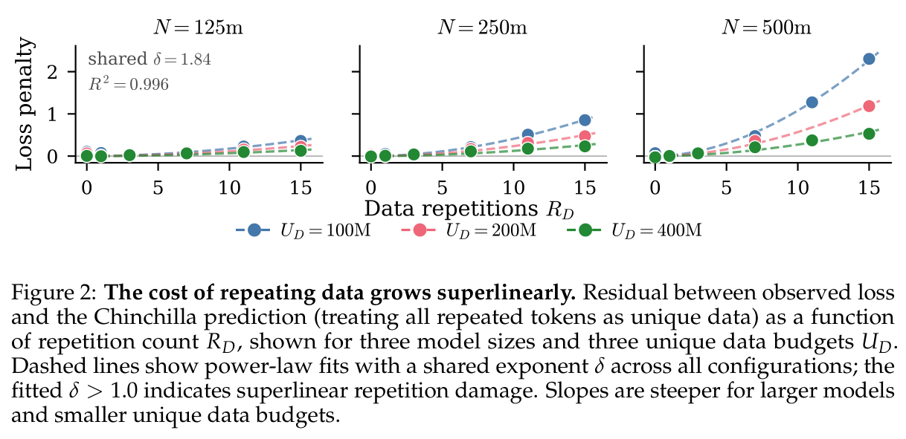
惩罚形式的复杂度阶梯。考察各配置中单元系数 \(P_i\) 如何变化，可以揭示其结构：模型越大、唯一数据预算越小，惩罚增长越陡。这促使我们提出一族复杂度逐渐增加的加性惩罚形式，将它们呈现为自由参数数量与拟合质量之间权衡的 Pareto 前沿。最简单的形式只有一个自由参数 \(P\)，并使用无量纲比值 \(N/U_D\)：
这种关于 \(R_D\) 线性的形式，就已经明显优于 Muennighoff et al.（2023）的形式（第 5 节）。加入第二个自由参数——容量比的指数 \(\kappa\)——后，惩罚可以随相对于数据量的模型规模非线性变化：
各配置中均有 \(\kappa>1\)，说明过拟合惩罚随模型容量与唯一数据量之比超线性增长。完整的四参数形式在重复次数上加入超线性指数 \(\delta\)，并将数据预算指数 \(\gamma\) 与模型规模指数 \(\kappa\) 解耦：
在 \(R_D=0\)（单 epoch）时，三种形式都精确退化为 Chinchilla law。它们与有效数据方法在概念上的关键区别是：重复 token 具有双重作用，一方面继续减小数据充分性项（并未浪费），另一方面同时产生不断增长的过拟合代价。
5. Scaling law 验证
我们在两组独立的 scaling 扫描上，将加性惩罚规律（公式 6–8）与 Chinchilla 基线和 Muennighoff et al.（2023）的有效数据形式进行验证。第一组是第 3 节所述的我们自己的 CLM 扫描。第二组是 Muennighoff et al.（2023）的公开 scaling 扫描，纳入所有不超过 64 个 epoch 的运行；这一筛选比其原始分析使用的 outlier 移除标准更宽松。
图 3 比较了不同模型规模下的预测和观测 loss。我们提出的规律在所有配置上都能准确跟踪观测 loss，捕捉到有效数据形式遗漏的大量重复下的性能退化。图 4 证实了定量上的改进：即使我们的单参数加性惩罚（公式 6）也明显优于 \(\widehat D(U_D,R_D)\) 形式和 \(\widehat D(U_D,R_D),\widehat N(U_N,R_N)\) 形式，而四参数形式（公式 8）在我们的数据上实现了近乎完美的拟合。这一提升也延伸到留出的 Muennighoff et al.（2023）数据，其模型规模与重复范围跨度更广。（本段接原文第 6 页。）
预印本。审稿中。
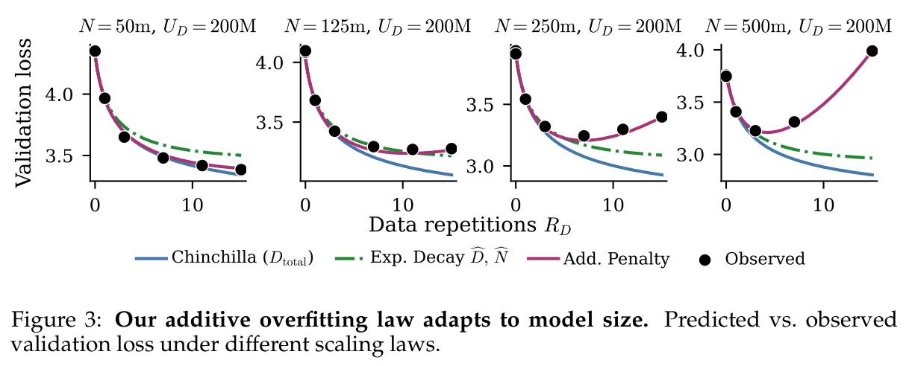
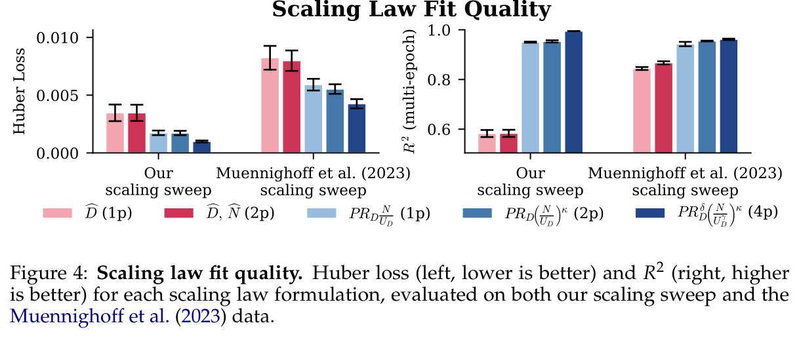
本页关于定量提升的跨页段落已接续于上一页译出。
重复数据下的计算最优分配。超线性的重复惩罚产生了与以往 scaling laws 在定性上不同的计算最优分配建议（图 5）。忽略过拟合的 Chinchilla law 总是建议更多重复：固定 \(U_D\) 时，最优总 token 数 \(D\) 随计算量线性增长。Muennighoff et al.（2023）的 \(\widehat D(U_D,R_D),\widehat N(U_N,R_N)\) 形式对此有所抑制，认为重复具有收益递减，但从不建议停止重复。相比之下，我们的四参数规律预测：超过某个计算预算后，额外重复将适得其反。分配前沿会发生回转：计算量较高时，该规律建议扩大模型规模，同时减少 epoch 数，1这反映了持续重复的过拟合代价。这为实践者提供具体指导：给定固定数据预算，存在一个计算量水平，超过它后，用更少 epoch 训练更大模型，优于用更多 epoch 训练较小模型。
指导性验证。上述 \(R^2\) 比较衡量的是描述性拟合，即各规律在其训练配置上的解释能力。更严格的测试是指导准确性：给定固定的唯一数据预算与计算预算，规律推荐的配置是否确实达到最低 loss？对表 1 中的每组“token 预算、计算预算”，我们分别求解各规律对应的最优模型规模与 epoch 数，训练其推荐配置并评测。我们的规律始终推荐更大的模型和更少的 epoch，并在所有设置下取得最好的困惑度与下游性能。（本段接原文第 7 页。）
1表面上，这一建议似乎与 Muennighoff et al.（2023）矛盾：他们发现，数据受限时应将计算量分配给训练更多 epoch 的较小模型。我们将这一分歧追溯到其分析中的一项方法选择，见附录 A。
预印本。审稿中。
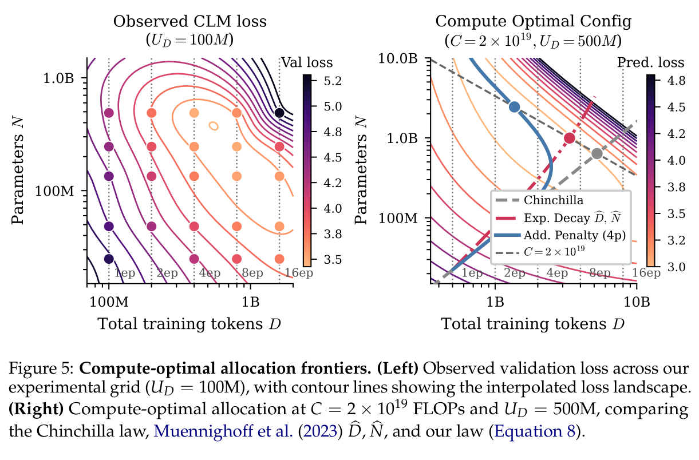
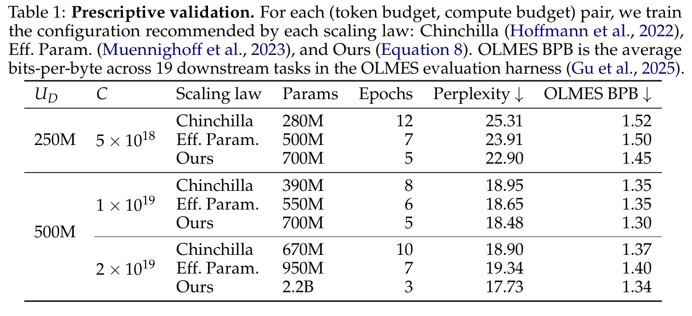
本页开头关于指导性验证的跨页段落已接续于上一页译出。
泛化到外部数据。为检验我们的 scaling law 形式的泛化性，我们将其应用于 Muennighoff et al.（2023）发布的数据；这些数据在我们开发 scaling law 的过程中被完全留出。因此，这构成了真正的泛化测试。他们在预训练主干架构（GPT-2 与 Llama-2）、tokenization 等方面作出不同选择。我们发现，即使在他们自己发布的数据上，加性惩罚形式也显著优于 Muennighoff et al.（2023）的形式，证实这一改进能够跨预训练实现泛化。
6. 案例研究：权重衰减提高对数据重复的鲁棒性
过拟合系数直接量化训练配置对数据重复的鲁棒性。为说明这一点，我们分析权重衰减强度对重复耐受性的影响：对同一模型规模与数据预算网格，分别采用标准权重衰减 \(\lambda=0.1\) 和较强权重衰减 \(\lambda=1.0\) 两种设置训练，其他所有超参数保持不变。
预印本。审稿中。
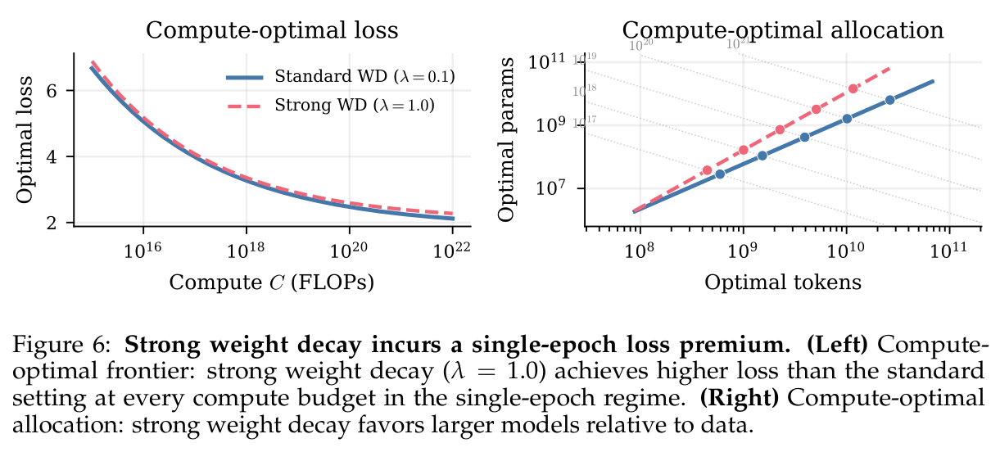
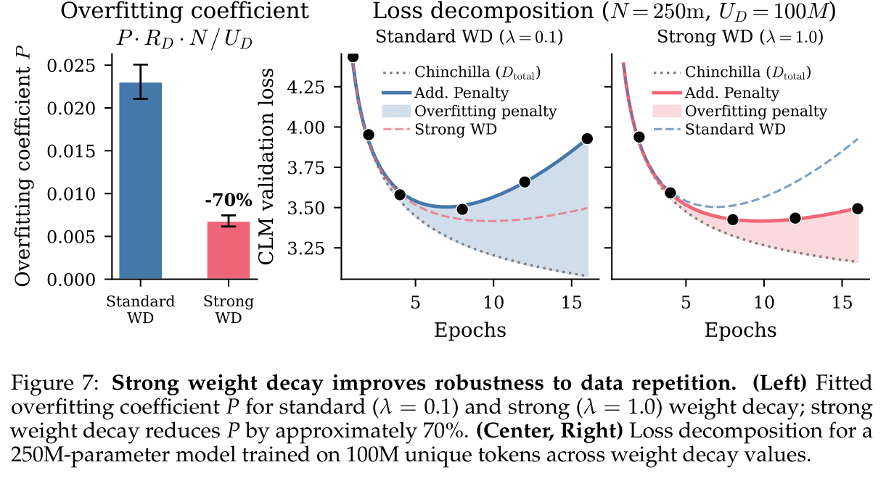
单 epoch 扩展。我们为每种设置分别拟合 Chinchilla 参数 \((A,B,E,\alpha,\beta)\)。在单 epoch 情形下，较强权重衰减在每个计算预算上都付出额外 loss 代价（图 6），其计算最优分配也倾向于相对于数据量更大的模型。
数据重复下的扩展。我们对两种权重衰减设置独立拟合加性惩罚（公式 8）。图 7 左图展示了单参数形式（公式 6）拟合出的 \(P\) 值：较强权重衰减使 \(P\) 降低约 70%，意味着每次重复产生的过拟合远少。代表性配置的 loss 分解（中、右图）表明，两种设置的过拟合惩罚都超线性增长，但较强权重衰减下的幅度明显更低。
重复数据下的交叉。尽管单 epoch 时存在额外 loss 代价，显著降低的过拟合成本仍会带来性能交叉点（图 8）。在 \(U_D=250\mathrm M\) 时，中等计算量下标准权重衰减获得更低 loss，但在 \(C\approx3.2\times10^{18}\) FLOPs 时，强权重衰减反超，因为标准设置更陡的惩罚侵蚀了其单 epoch 优势。我们的 scaling law 可以预测这一交叉点，即更低的惩罚足以补偿单 epoch 额外代价时的计算预算。
指导性验证。我们在留出配置上进行验证（表 2）。结果证实了规律所预测的交叉动态。在预测的交叉预算 \(C_\times\) 附近，两种设置表现接近。超过这一点后，差距迅速扩大：在 \(C=1\times10^{19}\)（约为交叉点的 3 倍）时，强权重衰减将困惑度降低 2.8。\(U_D=500\mathrm M\) 时也呈现相同模式：交叉点附近两种设置相近，但在 \(3\times10^{19}\) 时，强权重衰减的困惑度为 16.65，相比之下标准设置为 18.16。我们的规律正确预测了强权重衰减应训练更多 epoch，而且在数据约束实际生效时，推荐的配置获得更低 loss。这从指导性角度支持了 Kim et al.（2026）的经验发现：数据受限情形中的最优权重衰减可比标准实践高一个数量级。（本段接原文第 9 页。）
预印本。审稿中。
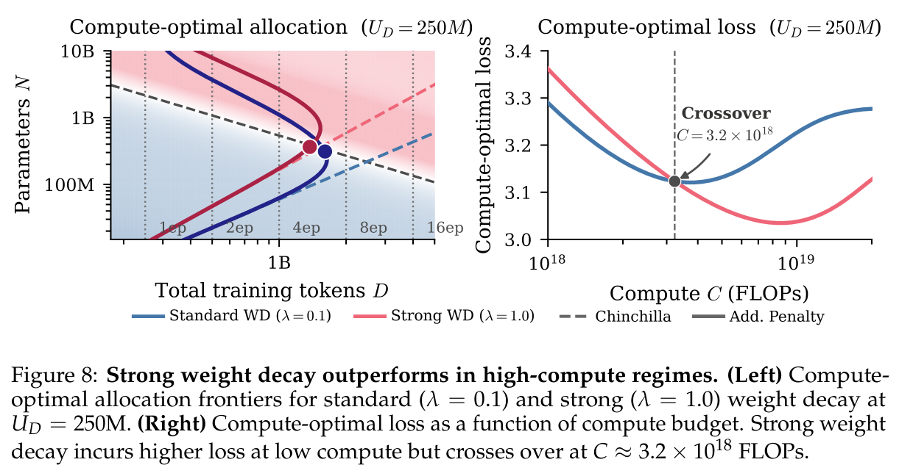
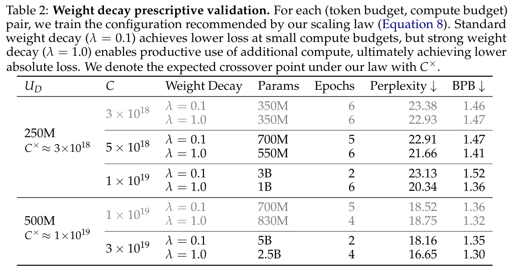
本页开头关于权重衰减验证的跨页段落已接续于上一页译出。
实际意义。计算最优分配前沿（图 5）为数据受限的实践者提供具体指导。给定固定数据预算，存在一个计算阈值，超过它后继续重复数据反而有害。超过此阈值，应将计算量更多投入模型容量。再结合强权重衰减可将过拟合系数 \(P\) 降低约 70% 的发现，数据受限设置中的实践者便有两种互补手段：提高正则化强度，以及选择恰当的模型规模与 epoch 权衡。
局限。我们的研究涵盖最高 1B 参数的模型规模，以及最多 16 个 epoch 的重复；我们无法确认拟合指数在实践所用的前沿规模上仍然成立。我们的 scaling law 形式可能无法外推至超出本研究覆盖范围的极端重复次数。尤其是，该规律并未包含双下降等现象（Nakkiran et al., 2020）。我们只测试了两个权重衰减值（\(\lambda\in\{0.1,1.0\}\)），并拟合独立的 scaling 扫描以提供指导性建议。扩展该规律以直接纳入正则化强度，是未来一个有趣方向。
预印本。审稿中。
7. 结论
我们提出了一个简单的数据受限 scaling law，用简单的加性过拟合惩罚来建模数据重复的代价。由单参数、双参数和四参数形式组成的复杂度阶梯，提供了拟合质量与复杂度之间的 Pareto 前沿，即使最简单的形式也明显优于以往有效数据形式。过拟合惩罚提供了评估训练配置的新维度，可直接量化对数据重复的鲁棒性。随着计算量比数据增长得更快，这一性质日益重要。作为案例研究，我们表明，较强权重衰减（\(\lambda=1.0\)）使过拟合惩罚降低约 70%，提供了指导性结论，可以解释并替代以往经验工作所需的昂贵、针对每种配置的超参数扫描（Kim et al., 2026）。最后，过拟合惩罚带来定性上全新的计算最优分配建议：超过某个计算预算阈值，进一步重复数据反而有害，实践者应转而扩大模型容量。这些发现共同为日益普遍的情形提供具体指导：高质量数据，而非计算量，是实际生效的约束。
致谢
JL 获得 Google PhD Fellowship 支持。本研究获 AI-MI 及 NSF 项目 DMR-2433348 支持。我们感谢使用 Empire AI Consortium, Inc 的研究计算资源，这些资源得到纽约州、Simons Foundation 和 Secunda Family Foundation 的支持。
参考文献
Armen Aghajanyan、Lili Yu、Alexis Conneau、Wei-Ning Hsu、Karen Hambardzumyan、Susan Zhang、Stephen Roller、Naman Goyal、Omer Levy 和 Luke Zettlemoyer。生成式混合模态语言模型的 scaling laws。International Conference on Machine Learning，265–279 页，PMLR，2023。
Loubna Ben Allal、Anton Lozhkov、Elie Bakouch、Gabriel Martin Blazquez、Guilherme Penedo、Lewis Tunstall、Andrés Marafioti、Agustín Piqueres Lajarín、Hynek Kydlíček、Vaibhav Srivastav、Joshua Lochner、Caleb Fahlgren、Xuan Son NGUYEN、Ben Burtenshaw、Clémentine Fourrier、Haojun Zhao、Hugo Larcher、Mathieu Morlon、Cyril Zakka、Colin Raffel、Leandro Von Werra 和 Thomas Wolf。SmolLM2：小模型走向大规模——完全开放小型语言模型的以数据为中心的训练。Second Conference on Language Modeling，2025。URL：https://openreview.net/forum?id=3JiCl2A14H。
Yonatan Bisk、Rowan Zellers、Jianfeng Gao、Yejin Choi 等。PIQA：用自然语言进行物理常识推理。AAAI Conference on Artificial Intelligence 论文集，第 34 卷，7432–7439 页，2020。
Mehdi Cherti、Romain Beaumont、Ross Wightman、Mitchell Wortsman、Gabriel Ilharco、Cade Gordon、Christoph Schuhmann、Ludwig Schmidt 和 Jenia Jitsev。对比式语言图像学习的可复现 scaling laws。IEEE/CVF Conference on Computer Vision and Pattern Recognition 论文集，2818–2829 页，2023。
Peter Clark、Isaac Cowhey、Oren Etzioni、Tushar Khot、Ashish Sabharwal、Carissa Schoenick 和 Oyvind Tafjord。以为你已解决问答？试试 ARC，AI2 推理挑战。arXiv:1803.05457v1，2018。
Pradeep Dasigi、Kyle Lo、Iz Beltagy、Arman Cohan、Noah A Smith 和 Matt Gardner。以研究论文为依据的信息搜寻问题与答案数据集。2021 Conference of the North American Chapter of the Association for Computational Linguistics: Human Language Technologies 论文集，4599–4610 页，2021。
Dheeru Dua、Yizhong Wang、Pradeep Dasigi、Gabriel Stanovsky、Sameer Singh 和 Matt Gardner。DROP：需要对段落进行离散推理的阅读理解基准。2019 Conference of the North American Chapter of the Association for Computational Linguistics: Human Language Technologies 论文集，Volume 1（长短论文），2368–2378 页，2019。（本条接原文第 11 页。）
预印本。审稿中。
本页首条跨页参考文献已接续于上一页译出。
Samir Yitzhak Gadre, Georgios Smyrnis, Vaishaal Shankar, Suchin Gururangan, Mitchell Wortsman, Rulin Shao, Jean Mercat, Alex Fang, Jeffrey Li, Sedrick Keh, Rui Xin, Marianna Nezhurina, Igor Vasiljevic, Luca Soldaini, Jenia Jitsev, Alex Dimakis, Gabriel Ilharco, Pang Wei Koh, Shuran Song, Thomas Kollar, Yair Carmon, Achal Dave, Reinhard Heckel, Niklas Muennighoff, and Ludwig Schmidt. 语言模型在过量训练和下游任务上可靠扩展。 In The Thirteenth International Conference on Learning Representations, 2025. URL https://openreview.net/forum?id=iZeQBqJamf.
Yuling Gu, Oyvind Tafjord, Bailey Kuehl, Dany Haddad, Jesse Dodge, and Hannaneh Hajishirzi. OLMES：语言模型评测标准。 In Findings of the Association for Computational Linguistics: NAACL 2025, pp. 5005–5033, 2025.
Ishaan Gulrajani and Tatsunori B Hashimoto. 基于似然的扩散语言模型。 Advances in Neural Information Processing Systems, 36:16693–16715, 2023.
David Heineman, Valentin Hofmann, Ian Magnusson, Yuling Gu, Noah A. Smith, Hannaneh Hajishirzi, Kyle Lo, and Jesse Dodge. 信号与噪声：减少语言模型评测不确定性的框架。 In The Thirty-ninth Annual Conference on Neural Information Processing Systems, 2025. URL https://openreview.net/forum?id= sAFottNlra.
Jordan Hoffmann, Sebastian Borgeaud, Arthur Mensch, Elena Buchatskaya, Trevor Cai, Eliza Rutherford, Lisa Anne Hendricks, Johannes Welbl, Aidan Clark, et al. 训练计算最优的大型语言模型。 Advances in Neural Information Processing Systems, pp. 30016–30030, 2022.
Di Jin, Eileen Pan, Nassim Oufattole, Wei-Hung Weng, Hanyi Fang, and Peter Szolovits. 这位患者得了什么病？源自医学考试的大规模开放域问答数据集。 Applied Sciences, 11(14):6421, 2021.
Jared Kaplan, Sam McCandlish, Tom Henighan, Tom B Brown, Benjamin Chess, Rewon Child, Scott Gray, Alec Radford, Jeffrey Wu, and Dario Amodei. 神经语言模型的 scaling laws。 arXiv preprint arXiv:2001.08361, 2020.
Konwoo Kim, Suhas Kotha, Percy Liang, and Tatsunori Hashimoto. 无限计算量下的预训练。 In The Fourteenth International Conference on Learning Representations, 2026. URL https://openreview.net/forum?id=ck0aZTAnwK.
Tanishq Kumar, Zachary Ankner, Benjamin Frederick Spector, Blake Bordelon, Niklas Muennighoff, Mansheej Paul, Cengiz Pehlevan, Christopher Re, and Aditi Raghunathan. 精度的 scaling laws。 In The Thirteenth International Conference on Learning Representations, 2025. URL https://openreview.net/forum?id=wg1PCg3CUP.
Tom Kwiatkowski, Jennimaria Palomaki, Olivia Redfield, Michael Collins, Ankur Parikh, Chris Alberti, Danielle Epstein, Illia Polosukhin, Jacob Devlin, Kenton Lee, Kristina Toutanova, Llion Jones, Matthew Kelcey, Ming-Wei Chang, Andrew M. Dai, Jakob Uszkoreit, Quoc Le, and Slav Petrov. Natural Questions：面向问答研究的基准。 Transactions of the Association for Computational Linguistics, 7:452–466, 2019. doi: 10.1162/tacl a 00276. URL https://aclanthology.org/Q19-1026/.
Jon M Laurent, Joseph D Janizek, Michael Ruzo, Michaela M Hinks, Michael J Hammerling, Siddharth Narayanan, Manvitha Ponnapati, Andrew D White, and Samuel G Rodriques. Lab-bench：衡量语言模型在生物学研究中的能力。 arXiv preprint arXiv:2407.10362, 2024.
Aitor Lewkowycz, Anders Andreassen, David Dohan, Ethan Dyer, Henryk Michalewski, Vinay Ramasesh, Ambrose Slone, Cem Anil, Imanol Schlag, Theo Gutman-Solo, et al. 用语言模型解决定量推理问题。 Advances in neural information processing systems, 35:3843–3857, 2022.
预印本。审稿中。
Margaret Li, Sneha Kudugunta, and Luke Zettlemoyer. Scaling laws 的（误）拟合：深度学习中 scaling law 拟合技术综述。 In The Thirteenth International Conference on Learning Representations, 2025. URL https://openreview.net/forum?id=xI71dsS3o4.
Jan Ludziejewski, Jakub Krajewski, Kamil Adamczewski, Maciej Pi ́oro, Michał Krutul, Szymon Antoniak, Kamil Ciebiera, Krystian Kr ́ol, Tomasz Odrzyg ́o ́zd ́z, Piotr Sankowski, Marek Cygan, and Sebastian Jaszczur. 细粒度混合专家的 scaling laws。 In Forty-first International Conference on Machine Learning, 2024. URL https://openreview. net/forum?id=yoqdlynCRs.
Niklas Muennighoff, Alexander Rush, Boaz Barak, Teven Le Scao, Nouamane Tazi, Aleksandra Piktus, Sampo Pyysalo, Thomas Wolf, and Colin A Raffel. 扩展数据受限语言模型。 Advances in Neural Information Processing Systems, 36:50358–50376, 2023.
Preetum Nakkiran, Gal Kaplun, Yamini Bansal, Tristan Yang, Boaz Barak, and Ilya Sutskever. 深度双下降：更大模型和更多数据何时有害。 In International Conference on Learning Representations, 2020. URL https://openreview.net/forum?id=B1g5sA4twr.
Team Olmo, Allyson Ettinger, Amanda Bertsch, Bailey Kuehl, David Graham, David Heineman, Dirk Groeneveld, Faeze Brahman, Finbarr Timbers, Hamish Ivison, et al. OLMo 3。 arXiv preprint arXiv:2512.13961, 2025.
Ankit Pal, Logesh Kumar Umapathi, and Malaikannan Sankarasubbu. MedMCQA：用于医疗领域问答的大规模多学科多选题数据集。 In Conference on health, inference, and learning, pp. 248–260. PMLR, 2022.
Denis Paperno, Germ ́an Kruszewski, Angeliki Lazaridou, Ngoc-Quan Pham, Raffaella Bernardi, Sandro Pezzelle, Marco Baroni, Gemma Boleda, and Raquel Fern ́andez. LAMBADA 数据集：需要广泛篇章上下文的词语预测。 In Proceedings of the 54th annual meeting of the association for computational linguistics (volume 1: Long papers), pp. 1525–1534, 2016.
Guilherme Penedo, Hynek Kydl ́ıˇcek, Anton Lozhkov, Margaret Mitchell, Colin Raffel, Leandro Von Werra, Thomas Wolf, et al. FineWeb 数据集：从网络中大规模提取优质文本数据。 Advances in Neural Information Processing Systems, 37:30811–30849, 2024.
Pranav Rajpurkar, Jian Zhang, Konstantin Lopyrev, and Percy Liang. SQuAD：用于机器文本理解的 100,000 多个问题。 In Proceedings of the 2016 conference on empirical methods in natural language processing, pp. 2383–2392, 2016.
Siva Reddy, Danqi Chen, and Christopher D Manning. CoQA：对话问答挑战。 Transactions of the Association for Computational Linguistics, 7:249–266, 2019.
Keisuke Sakaguchi, Ronan Le Bras, Chandra Bhagavatula, and Yejin Choi. Winogrande：大规模对抗性 Winograd schema 挑战。 Communications of the ACM, 64(9):99–106, 2021.
Maarten Sap, Hannah Rashkin, Derek Chen, Ronan Le Bras, and Yejin Choi. Social IQA：关于社会互动的常识推理。 In Proceedings of the 2019 conference on empirical methods in natural language processing and the 9th international joint conference on natural language processing (EMNLP-IJCNLP), pp. 4463–4473, 2019.
Nikhil Sardana, Jacob Portes, Sasha Doubov, and Jonathan Frankle. 超越 Chinchilla 最优：在语言模型 scaling laws 中纳入推理。 In Forty-first International Conference on Machine Learning, 2024. URL https://openreview.net/forum?id= 0bmXrtTDUu.
Alon Talmor, Jonathan Herzig, Nicholas Lourie, and Jonathan Berant. CommonsenseQA：面向常识知识的问答挑战。 In Proceedings of the 2019 Conference of the North American Chapter of the Association for Computational Linguistics: Human Language Technologies, Volume 1 (Long and Short Papers), pp. 4149–4158, 2019.
预印本。审稿中。
Hugo Touvron, Louis Martin, Kevin Stone, Peter Albert, Amjad Almahairi, Yasmine Babaei, Nikolay Bashlykov, Soumya Batra, Prajjwal Bhargava, Shruti Bhosale, et al. Llama 2：开放的基础模型与微调对话模型。 arXiv preprint arXiv:2307.09288, 2023.
(Kaggle Datasets) Tunguz. 200,000 多道 Jeopardy! 问题。 https://www.kaggle.com/ datasets/tunguz/200000-jeopardy-questions, 2019.
David Wadden, Kejian Shi, Jacob Morrison, Alan Li, Aakanksha Naik, Shruti Singh, Nitzan Barzilay, Kyle Lo, Tom Hope, Luca Soldaini, et al. SciRIFF：增强语言模型在科学文献上遵循指令能力的资源。 In Proceedings of the 2025 Conference on Empirical Methods in Natural Language Processing, pp. 6083–6120, 2025.
Johannes Welbl, Nelson F Liu, and Matt Gardner. 通过众包收集科学多选题。 In Proceedings of the 3rd Workshop on Noisy User-generated Text, pp. 94–106, 2017.
Rowan Zellers, Ari Holtzman, Yonatan Bisk, Ali Farhadi, and Yejin Choi. HellaSwag：机器真的能补全你的句子吗？ In Proceedings of the 57th annual meeting of the association for computational linguistics, pp. 4791–4800, 2019.
预印本。审稿中。
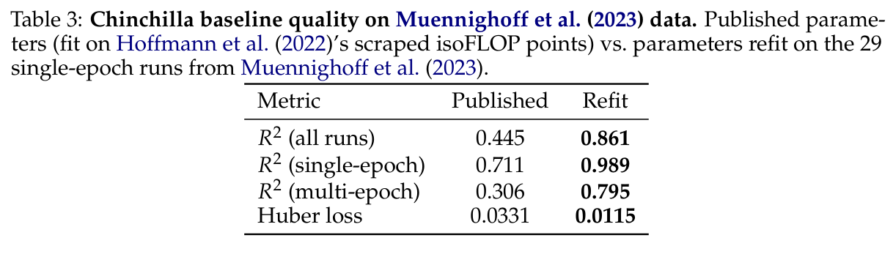
A. 重新分析 Muennighoff 等人的计算最优分配
我们的 scaling law 建议将数据受限的计算量投入用更少 epoch 训练的更大模型，而 Muennighoff et al.（2023）给出相反建议：用更多 epoch 训练更小模型。我们将这一分歧追溯到 Muennighoff et al.（2023）使用从 Hoffmann et al.（2022）抓取的 C4 isoFLOP 点拟合其 Chinchilla 基础规律，而非使用自己的 scaling 训练运行。虽然两项研究都使用 C4，但 tokenization、预处理及训练代码库的差异意味着，在一组运行上拟合的参数未必能迁移到另一组（Li et al., 2025）。事实上，我们表明，该基线对 Muennighoff et al.（2023）的单 epoch 运行拟合不佳，\(\widehat D,\widehat N\) 有效参数机制主要是在补偿这一基线误差。当在他们自己的数据上重新拟合 Chinchilla 基础规律后，两项分析的结论便一致。
以下所有结果均使用 Muennighoff et al.（2023）经过滤的数据划分（182 次运行），采用其 outlier 移除标准，与其评测设置匹配。
从 Hoffmann 等人迁移来的 Chinchilla 基线拟合不佳。表 3 比较已发表的 Chinchilla 参数，以及在 Muennighoff et al.（2023）的 29 次单 epoch 运行上重新拟合的参数。已发表参数只能解释单 epoch 数据中 71.1% 的方差（\(R^2=0.711\)）。由于没有涉及重复，这些运行本应由 Chinchilla law 很好地描述。在 Muennighoff et al.（2023）的单 epoch 数据上重新拟合 Chinchilla 参数，可得到 \(R^2=0.989\)，几乎完美拟合。Huber loss 降为三分之一，证实原参数对这些数据的描述很差。这种改进并非源于放宽 \(\alpha=\beta\) 约束：对相同 29 次运行进行指数绑定的重新拟合，也能达到 \(R^2=0.989\)。
有效参数机制补偿了基线误差。表 4 展示了对 \(\widehat D,\widehat N\) scaling law 的影响。使用已发表 Chinchilla 基础规律时，加入 \(\widehat D,\widehat N\) 机制使 \(R^2\) 增加 0.346（从 0.445 到 0.791），似乎提供了显著价值。使用重新拟合的基础规律时，相同机制仅使 \(R^2\) 增加 0.070（从 0.861 到 0.931）。绝对拟合质量有所提高（Huber 从 0.0158 降到 0.00720），但基线正确后，\(\widehat D,\widehat N\) 机制的边际贡献更小。
拟合参数揭示了机制上的解释。使用已发表基础规律时，有效参数的速率常数为 \(R_N^*=5.31\)，意味着有效模型规模很快饱和，使最优分配偏向更小模型。使用重新拟合的基础规律时，\(R_N^*=3294\)，实际上趋于无穷。优化器完全关闭了 \(\widehat N\) 机制。没有 \(\widehat N\) 将分配拉向更小模型后，重新拟合的 \(\widehat D,\widehat N\) 规律便建议更大模型和更少 epoch，与我们的独立发现一致。
分配建议反转。图 9 展示唯一数据预算为 25B token 时，已发表及重新拟合的 \(\widehat D,\widehat N\) 规律下的计算最优分配。已发表规律（黄色）相比 Chinchilla，倾向更小模型和更多 epoch，与原建议一致。重新拟合规律（红色）则反转方向，倾向更大模型，与我们的发现相符：计算量更应投入模型容量，而非数据重复。
预印本。审稿中。
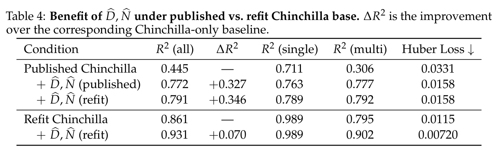
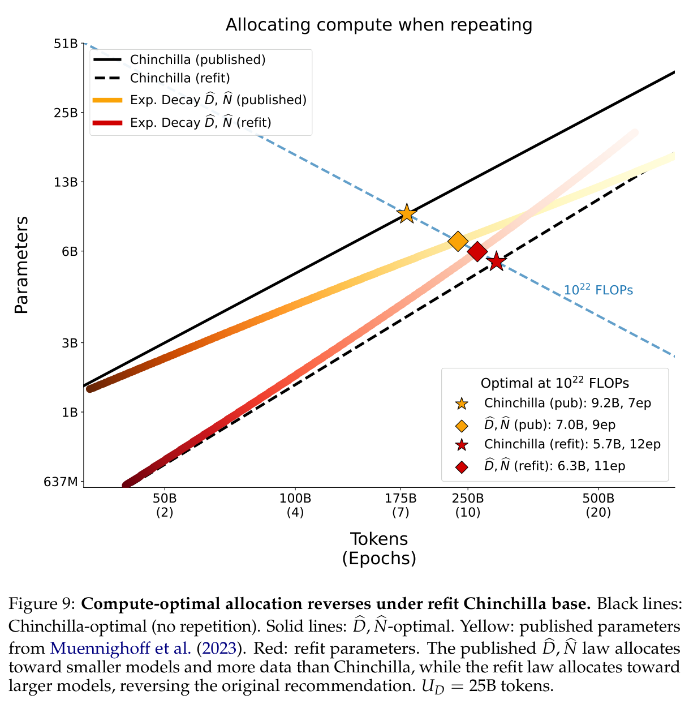
综上，我们的建议与 Muennighoff et al.（2023）之间表面上的分歧，归结为 \(\widehat N\) 机制吸收了来自错误指定的 Chinchilla 基线的系统误差。基线得到修正后，\(\widehat N\) 机制便自行关闭，分配建议与我们一致。我们指出，这一重新分析之所以可能，完全得益于 Muennighoff et al.（2023）公开了数据与实验细节。
预印本。审稿中。
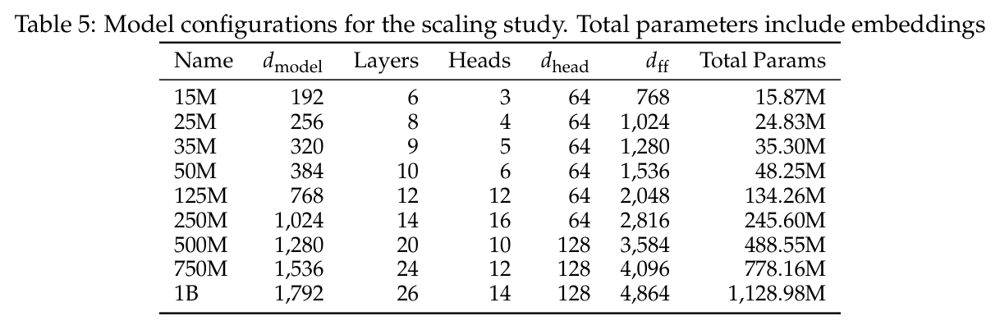
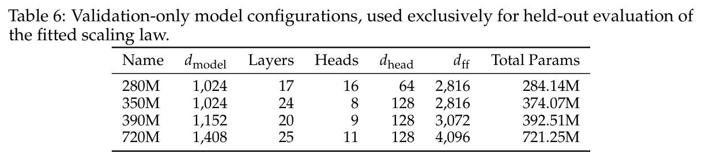
B. 训练细节
B.1. 架构
所有模型均采用 Llama 2 架构（Touvron et al., 2023），使用具有旋转位置 embeddings（RoPE）的多头 attention（MHA）、SwiGLU 前馈网络与 RMSNorm 前置归一化。所有运行均使用 Flash Attention 2 并启用 torch.compile。词表大小为 32,000 token（Llama 2 tokenizer）。
B.2. 模型配置
表 5 列出 scaling 研究使用的九种模型规模。表 6 列出另外四种配置，仅用于已拟合 scaling law 的留出验证。
B.3. 训练超参数
表 7 汇总所有运行共享的训练超参数。学习率采用余弦调度，在整个训练期间从峰值衰减到峰值的 10%，并在最初 1% 的步数内线性 warmup。
B.4. 数据集
我们在 FineWeb sample-10BT（Penedo et al., 2024）上训练，它是 FineWeb 语料的 100 亿 token 样本。文档被打包为固定 512 token 长度的块，以序列结束 token 分隔。
B.5. 评测
我们报告在 6400 篇验证文档上计算的最终验证 loss；不采用提前停止。
B.6. 基础设施
所有实验均在 NVIDIA B200 GPU 或 NVIDIA A6000 GPU 上进行，每次运行使用一个 GPU。
预印本。审稿中。
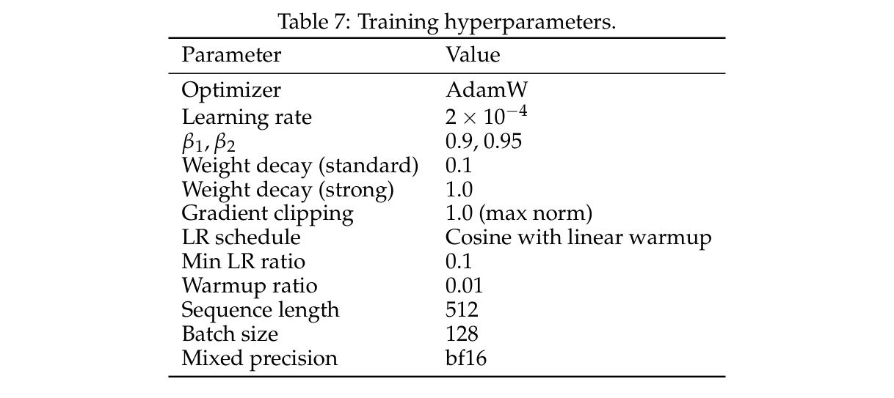
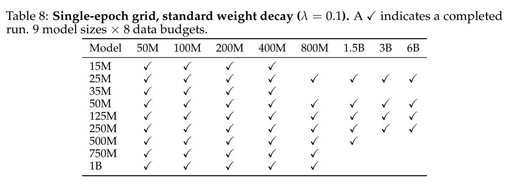
C. 实验网格
本附录详细列出标准（\(\lambda=0.1\)）和强权重衰减（\(\lambda=1.0\)）研究的完整实验网格。所有运行采用 Llama 2 架构，在 FineWeb 上以因果语言建模（CLM）目标训练。网格涵盖九种模型规模（15M–1B 参数）与八种唯一数据预算（50M–6B token），多 epoch 运行最多达到 16 个 epoch（\(R_D\in\{0,1,3,7,11,15\}\)）。
C.1. 标准研究（\(\lambda=0.1\)）
阶段 1：单 epoch 运行。表 8 展示单 epoch 网格。由于计算约束，较大模型被限制在较小预算内，因此形成带状设计。
阶段 2：多 epoch 运行。表 9 列出多 epoch 单元。Epoch 数对应重复水平 \(R_D=0,1,3,7,11,15\)。
C.2. 强权重衰减研究（\(\lambda=1.0\)）
阶段 1：单 epoch 运行。表 10 展示强权重衰减研究的单 epoch 网格。较大模型（750M、1B）和中等模型的较大预算仅包含单 epoch 运行，用于锚定 Chinchilla 基线，不扩展到多 epoch。
阶段 2：多 epoch 运行。表 11 列出强权重衰减研究的多 epoch 单元。
预印本。审稿中。
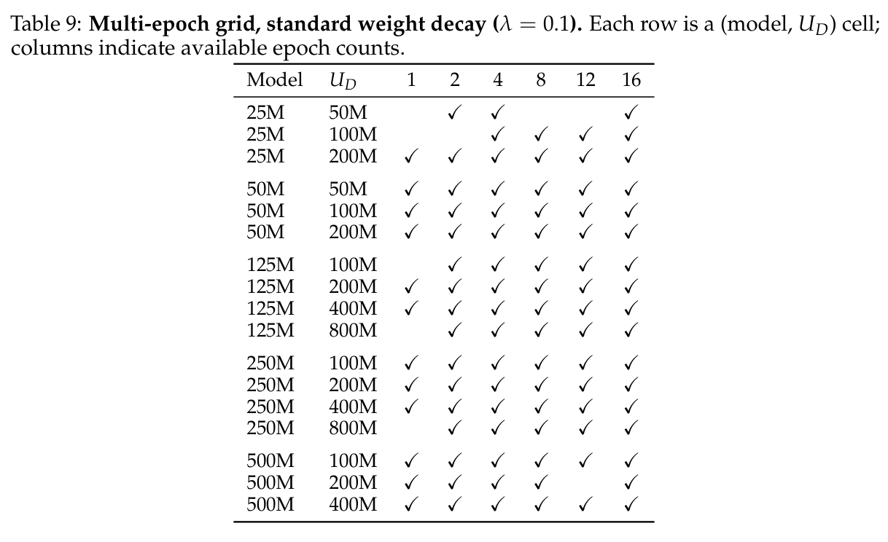
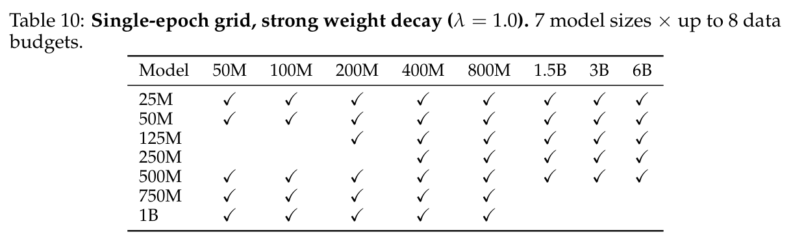
D. Scaling law 拟合细节
本附录报告正文讨论的所有 scaling law 拟合的完整数值结果，包括阶段 1（Chinchilla 基线）与阶段 2（重复惩罚）的参数估计、拟合优度指标，以及在 Muennighoff et al.（2023）的 C4 数据集上的外部验证。
D.1. 拟合方法
所有 scaling laws 均通过在对数空间中最小化 Huber loss 进行拟合，\(\delta_{\mathrm{Huber}}=10^{-3}\)，采用满足强 Wolfe 线搜索条件的 L-BFGS。为减轻对初始化的敏感性，我们使用网格搜索：Chinchilla 基础规律采用 324 组初始化（对 \(E,A,\alpha,B,\beta\) 的 \(4\times3\times3\times3\times3\) 网格），重复惩罚形式则根据自由参数数量采用 7–160 组初始化。
我们报告决定系数的三种变体：
- \(R^2\)：标准的 \(1-\mathrm{SS}_{\mathrm{res}}/\mathrm{SS}_{\mathrm{tot}}\)，在所有数据点上计算。
- \(R^2_{\mathrm{multi}}\)：仅在多 epoch 运行（epoch 数大于 1）上计算 \(R^2\)，以单独考察模型捕捉重复影响的能力。
- \(R^2_{\mathrm{single}}\)：仅在单 epoch 运行（\(R_D=0\)）上计算 \(R^2\)。
预印本。审稿中。
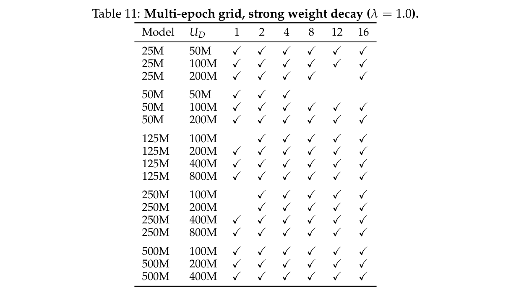
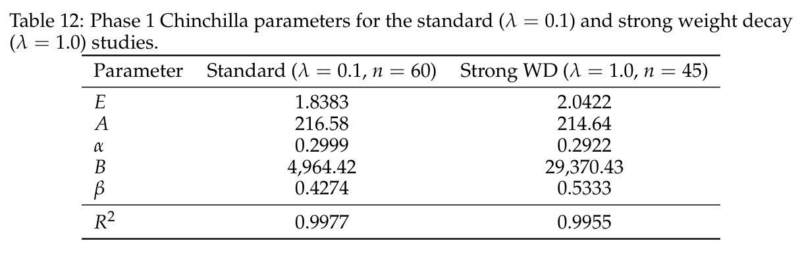
重复用 \(R_D=\mathrm{epochs}-1\) 参数化，其中 \(U_D\) 表示唯一 token 预算。阶段 2 拟合时锁定阶段 1 参数 \((E,A,\alpha,B,\beta)\)，仅优化重复惩罚参数。所有拟合均使用总参数量（embedding 与非 embedding 参数）。不确定性以 bootstrap 重采样之间的中位绝对偏差（MAD）报告。
D.2. 阶段 1：Chinchilla 参数
表 12 报告两种权重衰减条件下的 Chinchilla 基线参数。基础规律采用 \(L(N,D)=E+A/N^\alpha+B/D^\beta\) 的形式，仅在单 epoch 运行上拟合。强权重衰减（\(\lambda=1.0\)）使熵下限 \(E\) 提高约 0.2 nat，\(B\) 增加到 6 倍，同时数据指数 \(\beta\) 更陡，这与更强正则化在固定参数量下减少有效模型容量相一致。
D.3. 阶段 2：重复惩罚参数
阶段 2 在锁定的阶段 1 参数之上拟合重复惩罚。我们比较五种函数形式：两种来自既有工作的基线，以及复杂度阶梯中的三种加性惩罚形式。
基线形式。Muennighoff et al.（2023）的指数衰减形式定义有效数据 \(\widehat D=U_D[1+R^*(1-\exp(-R_D/R^*))]\)，并计算 \(L(N,\widehat D)=E+A/N^\alpha+B/\widehat D^\beta\)。
预印本。审稿中。
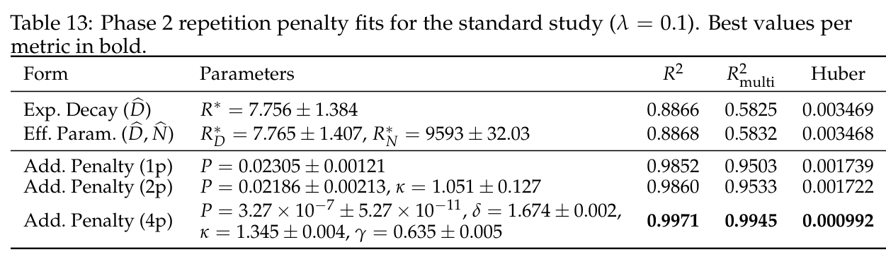
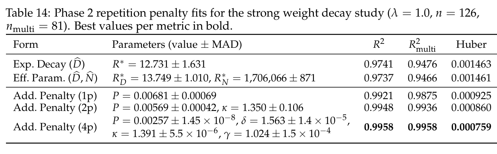
有效参数扩展增加 \(\widehat N=U_N[1+R_N^*(1-\exp(-R_N/R_N^*))]\)，并计算 \(L(\widehat N,\widehat D)\)。
加性惩罚形式。单参数形式（公式 6）增加惩罚 \(C\,R_D(N/U_D)\)。双参数形式（公式 7）将其推广为 \(C\,R_D(N/U_D)^\kappa\)。四参数形式（公式 8）进一步推广为 \(C\,R_D^\delta(N/U_D^\gamma)^\kappa\)。
标准研究（\(\lambda=0.1\)）。表 13 报告在我们 FineWeb 数据上的拟合（总计 \(n=157\)，其中多 epoch 运行 \(n_{\mathrm{multi}}=81\)）。即使单参数加性惩罚也明显优于两个基线，达到 \(R^2_{\mathrm{multi}}=0.9503\)，而指数衰减形式为 0.5825。四参数加性惩罚达到 \(R^2=0.9971\)。
强权重衰减研究（\(\lambda=1.0\)）。表 14 报告对应拟合（总计 \(n=126\)，\(n_{\mathrm{multi}}=81\)）。有两点突出。首先，强权重衰减下指数衰减基线的表现（\(R^2_{\mathrm{multi}}=0.9476\)）明显优于标准权重衰减（0.5825），反映强正则化下更温和的重复动态。其次，四参数加性惩罚在强权重衰减下得到 \(\gamma\approx1.02\)，而标准设置为 0.64，说明惩罚项中的数据扩展指数本身也受到正则化强度调节。指数衰减形式在强权重衰减下的 \(R^*=12.73\)，而标准设置为 7.76，证实强正则化使对重复的耐受性提高约 60%。
D.4. 在 Muennighoff 数据上的外部验证
为验证惩罚形式能泛化到我们的实验设置以外，我们在 Muennighoff et al.（2023）的去重 C4 数据集上重新拟合所有模型（\(n=158\)，最多 64 个 epoch）。该数据上阶段 1 的 Chinchilla 参数为 \(E=1.9031\)、\(A=432.63\)、\(\alpha=0.3362\)、\(B=5360.24\)、\(\beta=0.3868\)。
表 15 报告阶段 2 结果。我们额外报告 \(R^2_{\mathrm{single}}\)，即单 epoch 运行上的决定系数，以确认重复惩罚不会降低 Chinchilla 基线的拟合。除了 \(\widehat D,\widehat N\) 形式，其他所有形式按构造都达到相同的 \(R^2_{\mathrm{single}}=0.9763\)，因为加性惩罚项在 \(R_D=0\) 时消失。\(\widehat D,\widehat N\) 形式达到 \(R^2_{\mathrm{single}}=0.9832\)，因为其中的 \(\widehat N\) 饱和会修改对过度参数化单 epoch 运行的预测。在多 epoch 运行上，三种加性惩罚形式都优于两个基线，四参数形式获得最佳整体拟合（\(R^2_{\mathrm{multi}}=0.9617\)）。（本段接原文第 21 页。）
预印本。审稿中。
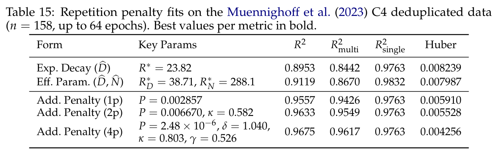
本页开头关于外部验证的跨页段落已接续于上一页译出。
D.5. FLOPs 近似
在计算最优分配分析中，我们将训练 FLOPs 近似为：
给定固定计算预算 \(C_{\mathrm{train}}\) 和唯一数据预算 \(U_D\)，我们扫描候选 epoch 数，计算其对应模型规模 \(N=C_{\mathrm{train}}/(6U_D\cdot\mathrm{epochs})\)，在每种 scaling law 下评估预测 loss，并选择使 loss 最小的分配。
E. 下游评测细节
本附录提供评测方法和任务级结果，支持表 1 和表 2 报告的 OLMES 平均 BPB 汇总分数。
E.1. 评测设置
所有下游评测均使用开放语言模型评测系统（OLMES）。我们采用以下方案评估最终 checkpoint：
- 格式：5-shot，阅读理解（RC）。
- 指标：Bits-per-byte（BPB）。
- 最大序列长度：512 token。
我们报告 BPB 而非准确率，因为 BPB 是连续指标，即使模型在多选任务上的表现接近随机水平，它仍能提供信息；在本研究的模型规模下，这种情况很常见（Heineman et al., 2025）。
E.2. 任务清单
表 16 列出计算 OLMES 平均 BPB 所用的 19 项任务。
E.3. \(U_D=250\mathrm M\) 时按任务分解的 BPB
表 17 报告表 1 中 \(U_D=250\mathrm M\)、\(C=5\times10^{18}\) 比较所涉及的三个计算量匹配配置的逐任务 BPB。
E.4. \(U_D=500\mathrm M\) 时的逐任务 BPB
表 18 和表 19 报告表 1 中 \(U_D=500\mathrm M\) 配置的逐任务 BPB。
预印本。审稿中。
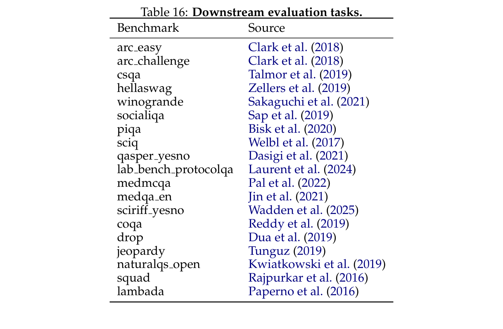
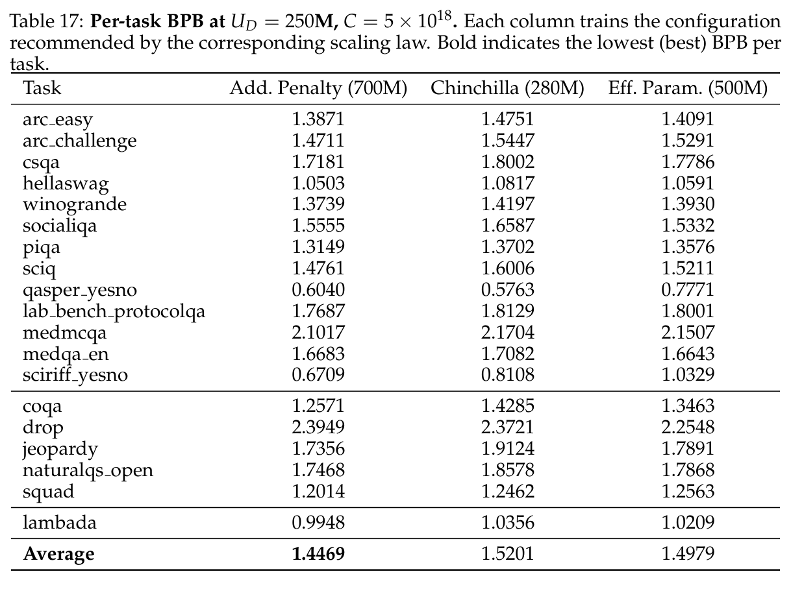
E.5. 权重衰减验证：逐任务 BPB
表 20–21 报告表 2 中所有权重衰减验证配置的逐任务 BPB。
预印本。审稿中。
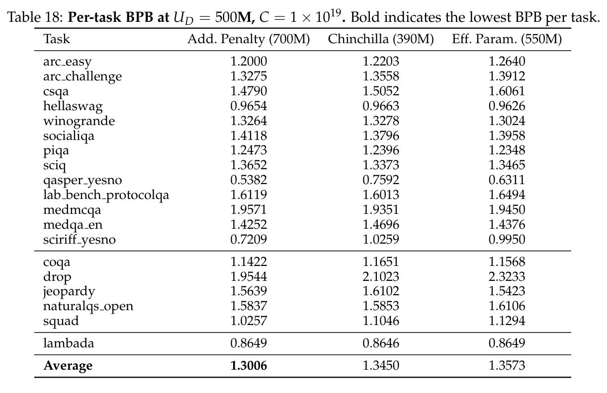
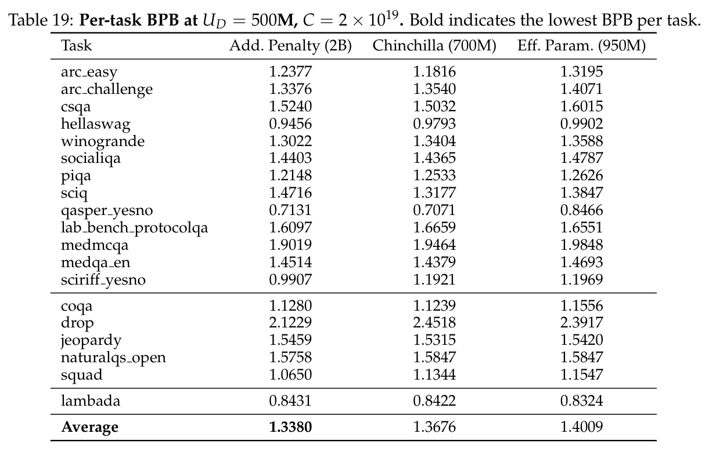
F. LLM 使用
在本研究开发过程中，大型语言模型被用作通用写作与编码助手。
预印本。审稿中。
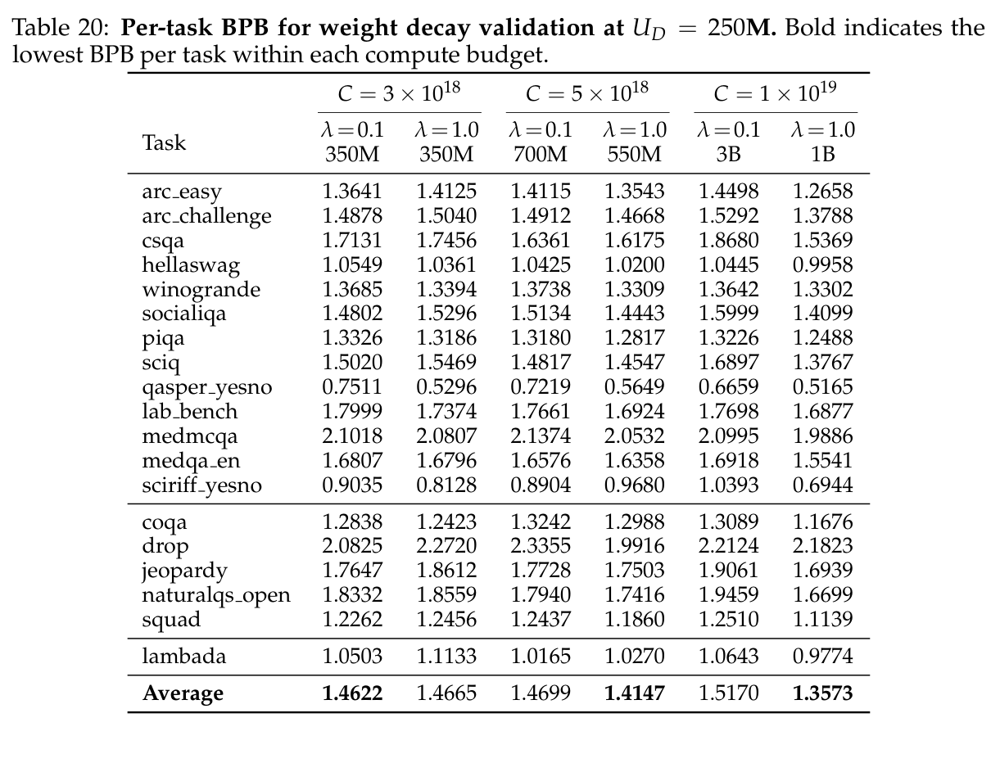
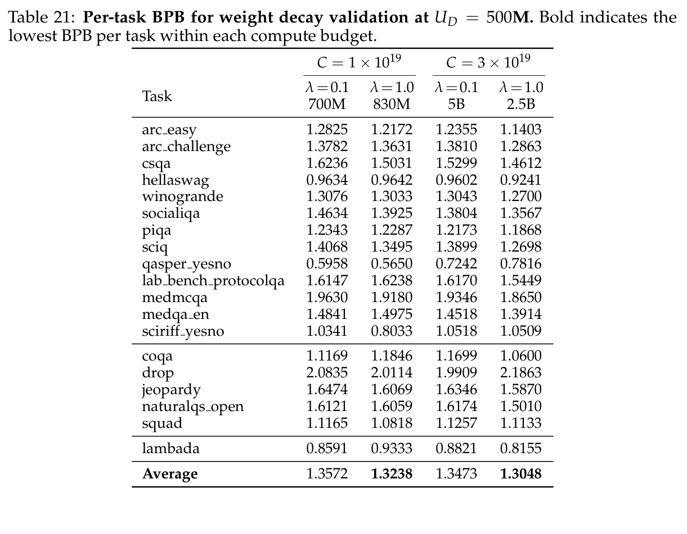